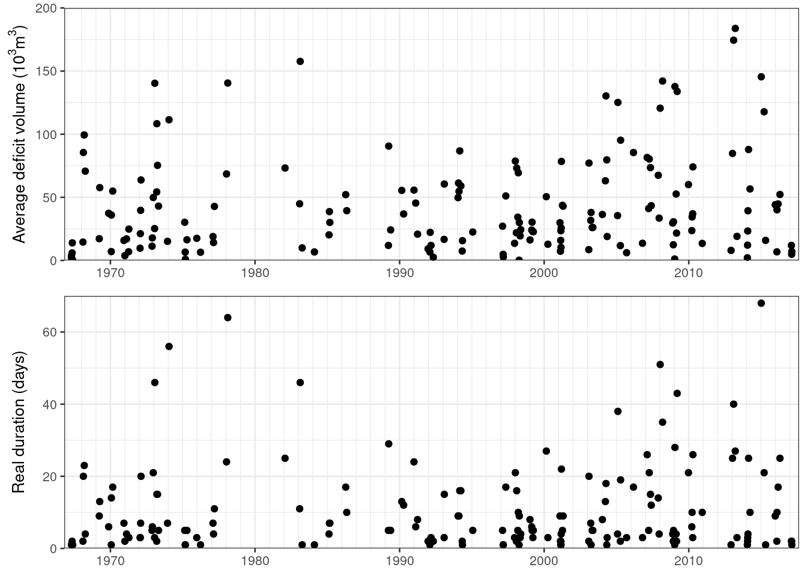
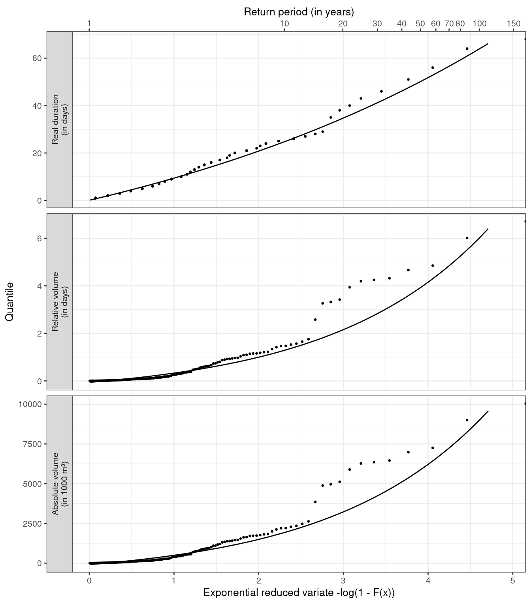
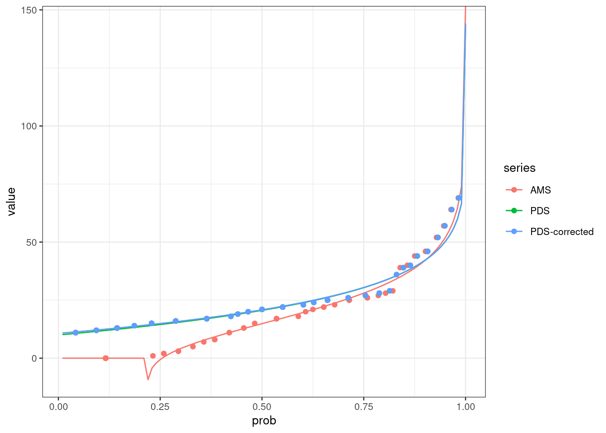

River Ngaruroro at Kuripapango in New Zealand, applied for frequency analysis of annual minimum series in Worked Example 6.1, is here applied for frequency analysis of drought deficit characteristics. The drought events were derived using the Nizowka program (Software, CD) as described in Worked Example 5.4 (Section 5.4.1). Partial duration series (PDS) of drought events below a given threshold were selected from time series of daily discharge, and \(Q_{90}\) was selected as the threshold. Two drought characteristics are analysed in the following: drought deficit volume and real drought duration as defined in Worked Example 5.4.
library(tidyverse)
library(hydroDrought)
library(lubridate)
ngaruroro <- international %>%
filter(river == "Ngaruroro") %>%
select(data) %>%
unnest(data) %>%
# fill gaps with a length of up to 15 days
sanitize_ts(approx.missing = 15) %>%
mutate(
year = water_year(time, origin = "-09-01")
) # remove incomplete years
coverage <- ngaruroro %>%
filter(!is.na(discharge)) %>%
pull(time) %>%
coverage_yearly(origin = "-09-01")
incomplete <- coverage %>%
filter(days.missing > 0) %>%
print()## # A tibble: 7 x 5
## year days.in.year days.with.data days.missing coverage
## <dbl> <int> <int> <int> <dbl>
## 1 1963 366 347 19 0.948
## 2 1965 365 294 71 0.805
## 3 1978 365 305 60 0.836
## 4 1986 365 341 24 0.934
## 5 1987 366 336 30 0.918
## 6 2001 365 344 21 0.942
## 7 2019 366 38 328 0.104complete <- coverage %>%
filter(days.missing == 0)
ngaruroro <- ngaruroro %>%
anti_join(incomplete, by = "year")Drought events were selected for River Ngaruroro and details of the selection criteria are given in Worked Example 5.4. The series cover the period 1964 to 2018 and the start of the year is set to 1 September.
A total of seven years were omitted from the series, 1963/64, 1965/66, 1978/79, 1986/87, 1987/88, 2001/02 and 2019/20, due to missing data.
q90 <- lfquantile(ngaruroro$discharge, exc.freq = 0.9)
droughts <- ngaruroro %>%
drought_events(
threshold = q90, pooling = "inter-event",
pooling.pars = list(min.duration = 2, min.vol.ratio = Inf),
full.table = TRUE
) %>%
mutate(
year = water_year(first.day, origin = "-09-01"),
year = factor(year, levels = full_seq(ngaruroro$year, 1))
)
tbl <- droughts %>%
transmute(
event, year, first.day, last.day,
duration = as.double(duration, units = "days"),
real.duration = dbt,
volume = volume / 1e3,
rel.volume = volume / (17.30839 * 86.4),
# rel.volume = as.difftime(round(rel.volume, 2), unit = "days"),
average.deficit = volume / duration
) %>%
print()## # A tibble: 172 x 9
## event year first.day last.day duration real.duration volume rel.volume
## <int> <fct> <date> <date> <dbl> <drtn> <dbl> <dbl>
## 1 1 1966 1967-04-23 1967-04-23 1 1 days 3.54e+0 0.00237
## 2 2 1966 1967-04-26 1967-04-26 1 1 days 1.81e+0 0.00121
## 3 3 1966 1967-05-09 1967-05-10 2 2 days 1.19e+1 0.00797
## 4 4 1966 1967-05-14 1967-05-14 1 1 days 1.39e+1 0.00930
## 5 5 1966 1967-05-23 1967-05-23 1 1 days 2.59e-1 0.000173
## 6 6 1967 1968-02-07 1968-02-08 2 2 days 2.91e+1 0.0195
## 7 7 1967 1968-02-18 1968-03-08 20 20 days 1.71e+3 1.14
## 8 8 1967 1968-03-11 1968-04-02 23 23 days 2.29e+3 1.53
## 9 9 1967 1968-04-06 1968-04-09 4 4 days 2.83e+2 0.189
## 10 10 1968 1969-03-25 1969-04-03 10 9 days 1.72e+2 0.115
## # … with 162 more rows, and 1 more variable: average.deficit <dbl>As only events below the \(Q_{90}\) percentile are selected, it might happen that the flow never becomes less than the threshold in a year (non-drought year).
A total of twelve out of the 42 years with observations did not experience a drought (22.2%). The PDS series of drought deficit volume and real duration are plotted in Figure 6.12. Less severe values are found in the second half of the observation period for both deficit volume (upper) and duration (lower). The data are still treated as one sample as the number of observations is considered insufficient for a separate analysis of two periods. It should further be noted that a similar trend towards less severe droughts is not as pronounced for the \(AM(1)\) values (Worked Example 6.1). This is likely a result of the high base flow contribution in the catchment (Figure 6.6).
Figure 6.12 PDS of drought deficit volume (upper) and real duration (lower) for River Ngaruroro at Kuripapango (NZ).
Following Zelenhasic & Salvai (1987) an estimate of the non-exceedance probability, \(F(x)\), for the largest event in each time interval is in Nizowka obtained by combining the distribution for the occurrence of events and the distribution for the magnitudes of deficit volume or duration. Here a time interval of one year is chosen. Subsequently the return period in years for a given event can be calculated. The number of drought events occurring in a time period t is commonly assumed to be Poisson distributed (Equation 6.9) with parameter \(\lambda t\). In Nizowka the binomial Pascal distribution is offered along with the Poisson distribution as described in ‘Background Information NIZOWKA’ (Software, CD). The distribution that best fitted deficit volume was the Pascal distribution for the number of droughts and the GP distribution for the deficits. For duration the Pascal distribution was chosen along with the Log-Normal distribution. The \(F(x)\) is for drought deficit volume plotted in Figure 6.13 together with the observed values plotted using a plotting position. The chosen distribution describes the data well, with the exception of some values in the upper range. The maximum value is, however, satisfactorily modelled.

The return period of a given event is calculated following Equation 6.4. The relationship between the drought characteristics as defined in Worked Example 5.4 and \(F(x)\) are given by the tabulated distribution functions in Nizowka. The design value for a particular return period, i.e. the T-year event, can be obtained from the tables for known values of \(F(x)\). The estimated 10-, 100- and 200-year drought events are shown in Table 6.2.
## # A tibble: 3 x 5
## prob return.period real.duration rel.volume abs.volume
## <dbl> <dbl> <dbl> <dbl> <dbl>
## 1 0.9 10. 24.7 1.29 1923.
## 2 0.99 100. 63.9 6.01 8992.
## 3 0.995 200. 79.7 9.05 13535.threshold <- 10
pds <- tbl %>%
select(event, year, duration, first.day, last.day) %>%
filter(duration > threshold) ams <- tbl %>%
select(event, year, duration, first.day, last.day) %>%
group_by(year) %>%
slice_max(duration, with_ties = FALSE) %>%
ungroup() %>%
complete(year, fill = list(duration = 0))data <- tibble(
series = c("AMS", "PDS", "PDS-corrected"),
events.per.year = c(1, 1, nrow(pds) / nrow(ams)),
bound = list(NULL, threshold, threshold),
distribution = c("gum", "gpa", "gpa"),
observations = list(ams$duration, pds$duration, pds$duration)
) %>%
mutate(
observations = map(observations, ~tibble(
value = .x,
prob.emp = rank(value) / (length(value) + 1),
rp.emp = (n() + 1) / rank(-value))
),
fit = pmap(list(x = map(observations, "value"),
dist = distribution,
bound = bound,
correct.prob = events.per.year),
fit_distr),
fitted = map(fit, ~tibble(
prob = seq(0.01, 1, 0.01),
value = .x$qua(prob)
)),
quantiles = map(fit, ~tibble(
rp = c(20, 50, 75, 100),
prob = 1 - 1/rp,
value = .x$qua(prob)
))
)obs <- data %>%
select(series, observations) %>%
unnest(observations)
fitted <- data %>%
select(series, fitted) %>%
unnest(fitted)
ggplot(fitted, aes(y = value, col = series)) +
geom_line(aes(x = prob)) +
geom_point(aes(x = prob.emp), data = obs)
x <- as.numeric(tbl$duration)
threshold <- 1
rp <- c(20, 50, 75, 100)
prob <- 1 - 1/rp
library(extRemes)
fit <- fevd(tbl$duration, threshold = threshold, type = "GP", method = "Lmoments",
time.units = "years", verbose = T)##
## Data span 171 years
## Beginning estimation procedure.# rate is the mean number of exceedances per year
rate <- sum(x > threshold) / nrow(complete)
fit$rate <- rate
ci(fit, return.period = rp)## fevd(x = tbl$duration, threshold = threshold, type = "GP", method = "Lmoments",
## time.units = "years", verbose = T)
##
## [1] "Parametric Bootstrap"
## 502 iterations
##
## 2.5% Estimate 97.5%
## 20-year 40.90181 56.07492 76.60468
## 50-year 49.94378 74.10598 112.71594
## 75-year 53.99213 82.95371 132.23514
## 100-year 57.07501 89.58280 147.67782library(lmom)
parameter <- pelgpa(samlmu(x[x > threshold]), bound = threshold)
prob.adj <- 1 - (1 - prob)/rate
quagpa(prob.adj, parameter)## [1] 56.07492 74.10598 82.95371 89.58280